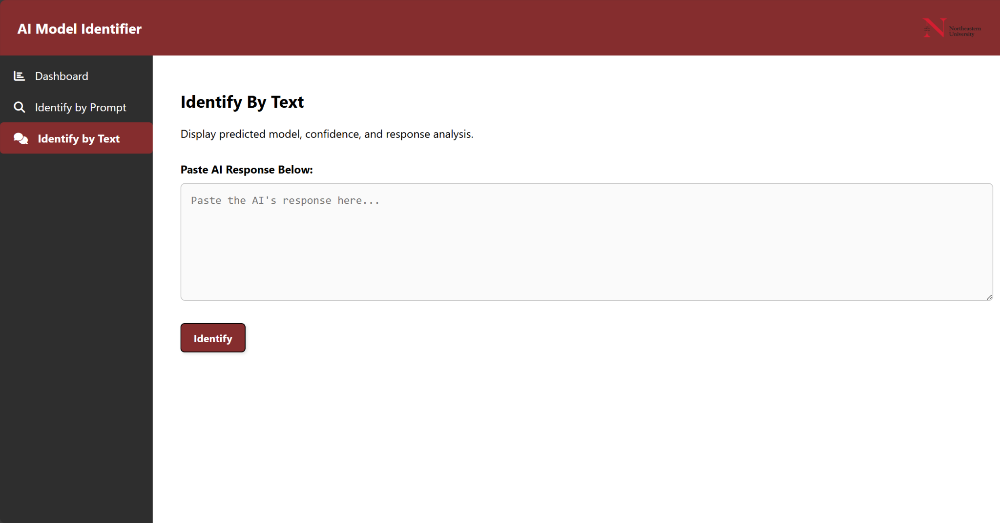
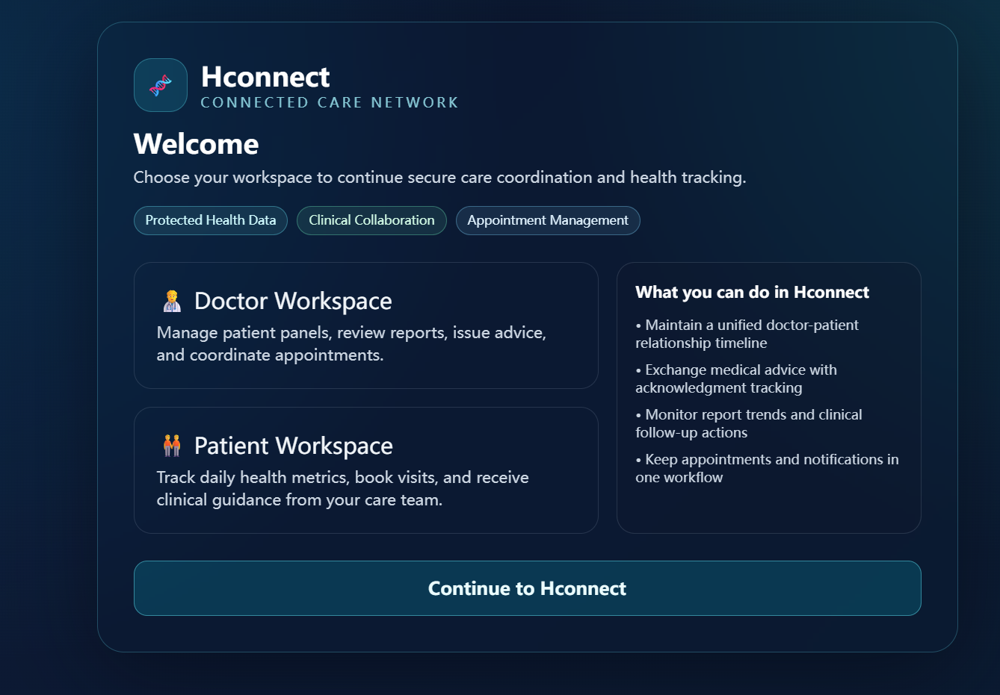

Digital Portfolio
Jinze Zhu
M.S. in Informatics student at Northeastern University with an interdisciplinary background in computer science, chemistry, and physics. I am especially interested in software development, frontend engineering, data analysis, and practical AI applications.
My academic and project experience centers on building usable digital systems, connecting frontend interfaces with backend services, and translating technical ideas into tools that support real users and real workflows.
Quick Snapshot
Graduate student with coursework in data structures, programming languages, software design, visual and image algorithms, and frontend and web programming, combined with hands-on project experience in web systems and applied AI.
2
Featured software projects
Full Stack
Frontend + backend exposure
AI
Applied text classification
Focus
Clean implementation and usability
About Me
A concise overview of my academic background, technical interests, and professional direction.
I am currently pursuing a Master of Science in Informatics at Northeastern University in Boston. Before starting this program, I completed a Bachelor of Science in Chemistry at the University of Toronto, with minors in Computer Science and Physics.
My computer-related coursework includes data structures and algorithms, programming languages and compilation, software design, linear algebra, statistics and calculus, visual and image algorithms, and frontend and web-oriented programming. These experiences helped me build a solid technical foundation while also developing the ability to approach problems from an interdisciplinary perspective.
I am most interested in building software that is practical, maintainable, and easy to use. My recent work has involved frontend development, API-connected web systems, and AI-enabled backend applications. I enjoy contributing to products where technical implementation and user experience both matter.
Technical Interests
Career Direction
I am seeking opportunities where I can continue growing as a software and data-oriented problem solver, especially in roles related to web development, technical product implementation, and applied data systems.
Selected Projects
Two featured repositories that best represent my recent work in frontend engineering, full-stack web development, and AI-enabled backend systems.
6940 – AI Identity Classification Web System
This repository contains a full-stack application with separate frontend and backend folders. The backend is built with FastAPI, uses SQLite with SQLAlchemy, loads an ai_identities module, applies text preprocessing with spaCy, and exposes an /identify-by-text API for classifying text input and returning prediction confidence and top results.
My contribution: I contributed to the web application structure and implementation workflow, with exposure to both interface and backend-connected system behavior. The project demonstrates my ability to work with API-based systems and understand how frontend and backend components fit together in an applied AI product.
Key skills: Python, FastAPI, SQLAlchemy, SQLite, React, JavaScript, NLP preprocessing, API design.
Reflection: This project helped me understand how an AI-enabled application is packaged into a usable web system. I became more comfortable reading backend logic, following data flow from input to prediction, and thinking about how machine learning outputs should be presented clearly to users.

HCONNECT2 – Healthcare Monitoring and Management Web App
HCONNECT2 is a healthcare monitoring and management web application organized into a React + Vite frontend and a Node.js + Express backend, with PostgreSQL for data storage, Auth0 for authentication, and Twilio for SMS verification. The repository also includes local development instructions and production deployment guidance for a GCP VM with Nginx and PM2.
My contribution: I focused on frontend-related work, including interface implementation, component-level development, and coordinating frontend behavior with backend APIs. This project reflects my interest in building responsive and usable web applications that connect cleanly to supporting services.
Key skills: React, Vite, JavaScript, HTML, CSS, API integration, Node.js, Express, PostgreSQL, deployment workflow awareness.
Reflection: This project strengthened my frontend development skills and gave me more confidence working in a full-stack environment. A major learning point was understanding how authentication, verification, database structure, and deployment considerations all influence the design of the user interface.
Resume
Selected computer-related education, project work, technical experience, and skills based on my current resume.
Education
- Northeastern University, Boston, MA
M.S. in Informatics, 2024 – Present - University of Toronto, Toronto, ON
B.S. in Chemistry, with minors in Computer Science and Physics, 2018 – 2024
Relevant Computer Coursework
- Data Structures and Algorithms
- Programming Languages and Compilation
- Software Design
- Linear Algebra, Statistics, and Calculus
- Visual and Image Algorithms
- Frontend and Web Programming
Selected Software Experience
-
OneOnOne Social Platform Development
Designed UI and frontend pages using HTML, CSS, React, and JavaScript; contributed to user and post management logic, testing, deployment, and API stability. -
Programmer, Shenzhen Yongbao Group
Developed and maintained web-based office software for leave requests, attendance, and business workflows; supported internal ISO process management and system maintenance.
Technical Skills
- Programming: Java, Python, C, JavaScript, HTML, CSS, React, Vue, R
- Data & Analysis: Excel, SQL, Minitab
- Web Development: React, frontend UI design, API-connected interfaces
- Languages: English, Mandarin Chinese
Professional Profile
I bring a cross-disciplinary background that combines scientific training with software-oriented problem solving. My resume reflects experience in frontend design, system implementation, data analysis, and maintaining practical web-based tools for users in real organizational settings.
Contact
Professional contact details for communication, networking, and future opportunities.
GitHub
Location
Boston, MA / Toronto, ON
Open To
Software development, frontend engineering, web application implementation, and data-related technical roles.